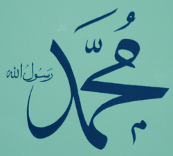

|  |
| Allah Resulu Muhammed |
Mevlid, doğum, doğum zamanı, doğum yeri anlamına gelmektedir. Arapça “ve-le-de” kökünden türetilmiş olup Rasulullah (sav)’ın doğumuna, bununla ilgili yapılan merasimlere, yazılan eserlere ve Rasulullah (sav)’ın doğduğu eve de “mevlid” denilmektedir. Rasulullah’ın doğduğu ev, Beytullah’ın doğusundaki Safa tepesinin yanında Mevlid sokağı diye adlandırılan yerdedir.
Rasulullah (sav), Fil yılında, Rebiül evvel ayının on ikinci Pazartesi gecesi dünyaya gelmiştir. Bu ise, miladi takvime göre, 571 yılının Nisan ayının yirmisi olarak hesaplanmıştır.
Rasulullah sav), doğduğu gece, bir takım mucizevî olaylar zuhur etmiş; Kisranın sarayındaki burçlar çatlamış, bin yıldan beri yanmakta olan ateşgedelerindeki ateş sönmüştü. Ayrıca, doğumu anında orada bulunan kadınlar da bir takım harikuladeliklere şahidolmuşlardı. Abdulmuttalip, doğumdan yedi gün sonra Mekke’de büyük bir ziyafet tertiplemiş ve çocuğa, Arapların o günekadar kullanmadıkları bir isim olan ve “övülmüş” anlamına gelen Muhammed adını verdiğini ilan etmişti.
İslam dünyasında mevlid merasimi ilk defa, Mısır’da hüküm süren Fatımîler (910-1171) tarafından tertiplenmiştir. Bu merasimler saraya ait olup, sadece devlet erkanı arasında cereyan etmekte idi. Fatimîler, Hz. Ali (ra) ve Fatıma(ra)’ın doğum günlerinde demevlid merasimleri tertip ederlerdi. Daha sonraki devirlerde bu merasimler tüm Müslümanlar arasında yaygınlaştı.
Avrupada Müslümanlar Mevlid Kandilini camilerde merasimler düzenleyerek, Rasulullah’ı anlatan ilahiler söyleyerek ve vaazlar tertipleyerek kutlarlar. Ayrıca son yıllarda büyük çapta salon programları organize edilmektedir.